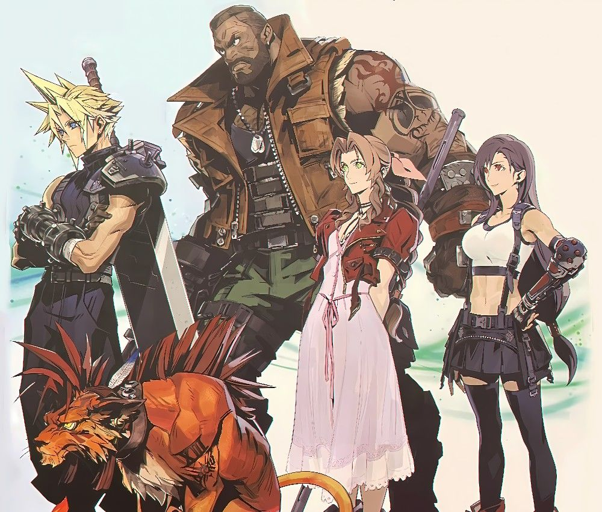

Como funciona a ficha
Uma ficha de D&D reúne atributos, classe, raça, nível, pontos de vida, classe de armadura e histórico do personagem. É esse modelo que o RPG-esque usa na página Nova Ficha.
Sobre o sistema Dungeons & Dragons
D&D é considerado o primeiro RPG de mesa moderno, criado nos anos 1970. Desde então, passou por diversas edições, chegando hoje à sua 5ª edição, a mais jogada atualmente.

Todo personagem começa como uma folha em branco, esperando para se tornar uma lenda.
— ditado comum entre mestres de D&D
Assista a um vídeo curto sobre o universo de D&D:
Uma ficha de D&D reúne atributos, classe, raça, nível, pontos de vida, classe de armadura e histórico do personagem. É esse modelo que o RPG-esque usa na página Nova Ficha.